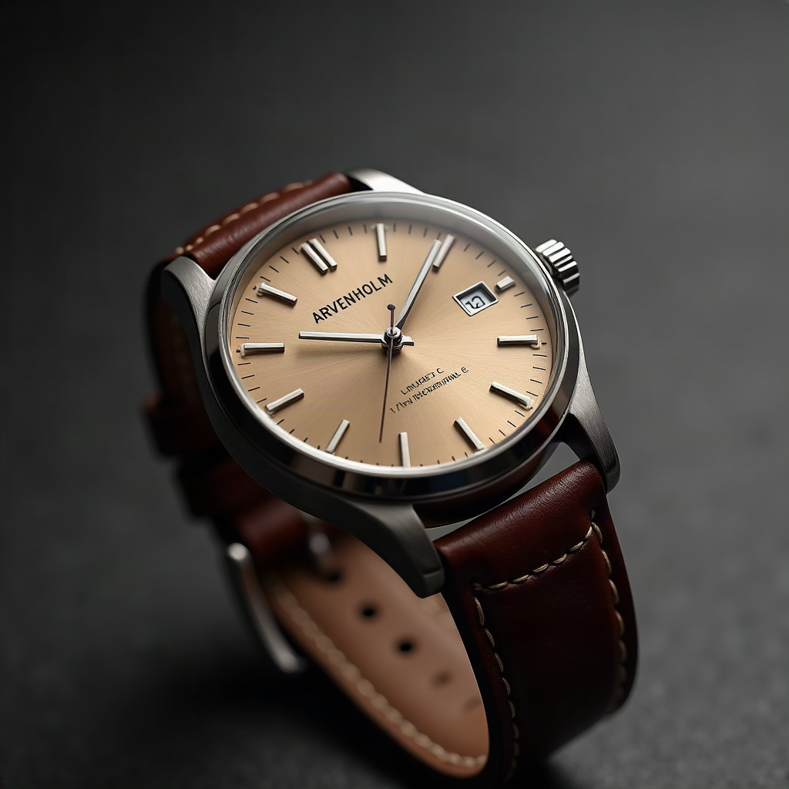

The Meridian 38 is Arvenholm’s modern field watch: a 38mm brushed 316L steel case around a warm sandstone dial, driven by a Swiss automatic movement with a 41-hour power reserve. Sapphire crystal, 10 ATM water resistance, and a quick-release leather strap make it as capable on the trail as it is under a cuff.